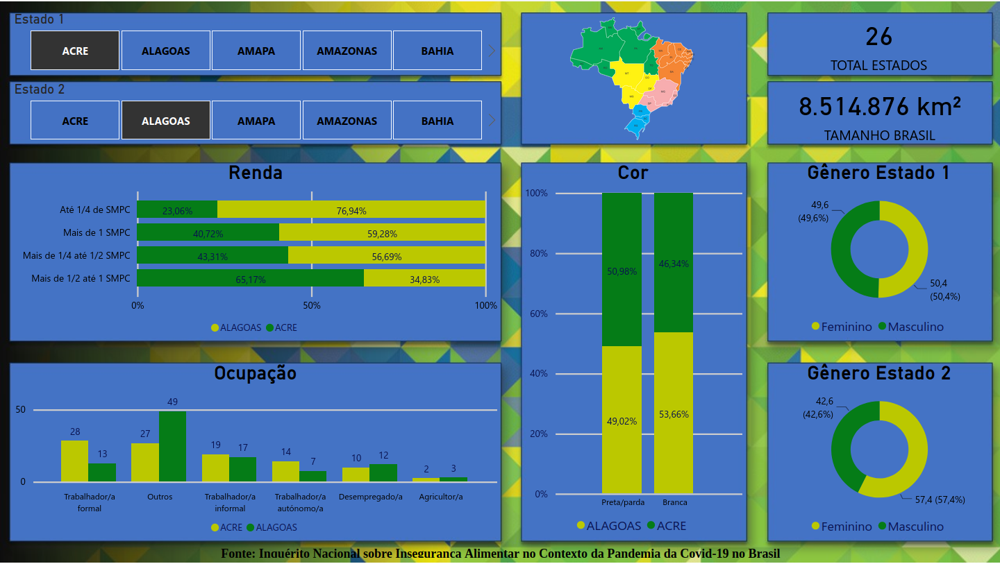
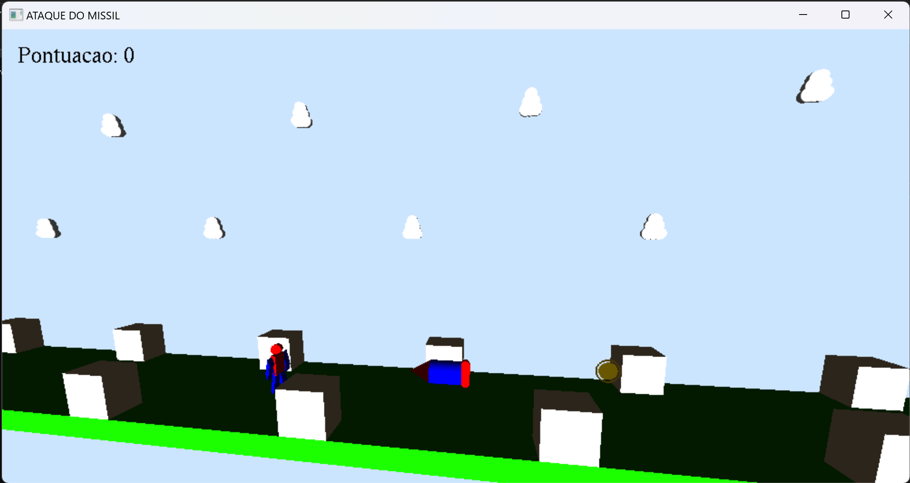
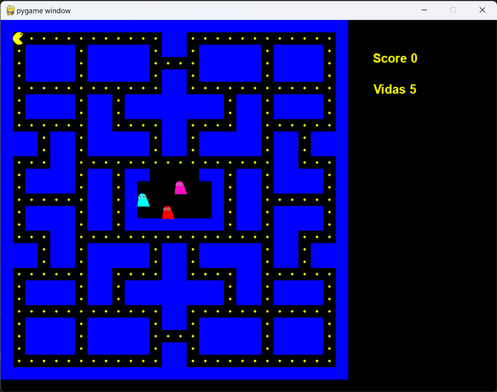
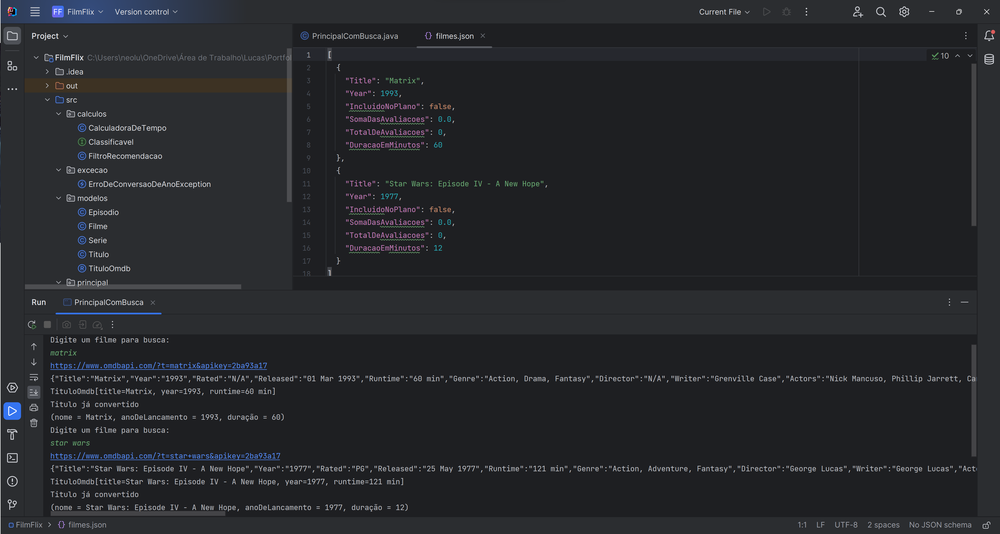

Desigualdade Estadual no Brasil
Projeto feito no Power BI, utilizando o Excel para limpar e manipular os dados. Coletando dados do Inquérito Nacional sobre Insegurança Alimentar no Contexto da Pandemia da Covid-19 no Brasil, pude criar planilhas que me auxiliaram na construção de um Dashboard interativo que demonstasse visualmente a desigualdade socioeconômica no Brasil.
Ataque do Missil
Projeto feito em C++, utilizando a biblioteca OpenGl para renderizar e projetar os obejtos 3D. O jogo consiste em capturar o máximo de moedas se mser atingido pelo missil. Realizei este projeto para a disciplina de computação gráfica na UERJ.
Pacman
Projeto feito em Python, utilizando a biblioteca PyGame. O projeto foi idealizado em recriar o clássico jogo do Pacman, porém utilizando uma tecnologia moderna, como orientação a objetos.
FilmFlix
Projeto feito em Java, onde o usuário pode buscar um filme de sua preferêncai para consultar o ano de lançamento, duração do filme, título completo etc. o projeto também cria um arquivo JSON com os filmes escolhidos. Utilizei a API "OMDB" para pegar as informações e tratei com o GSON.
